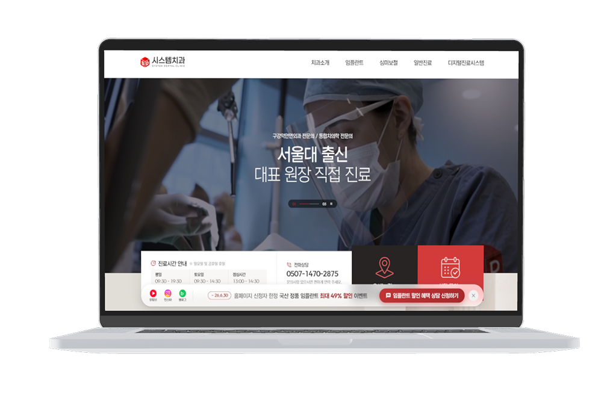
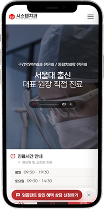
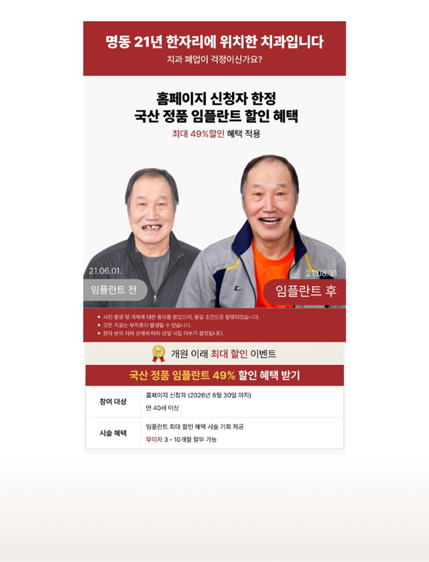
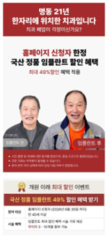
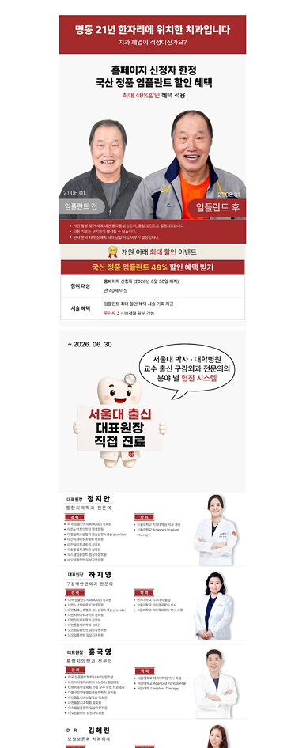
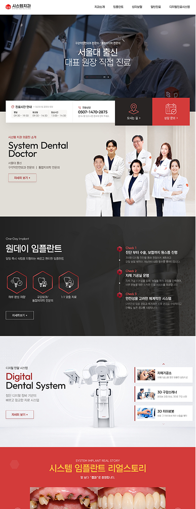
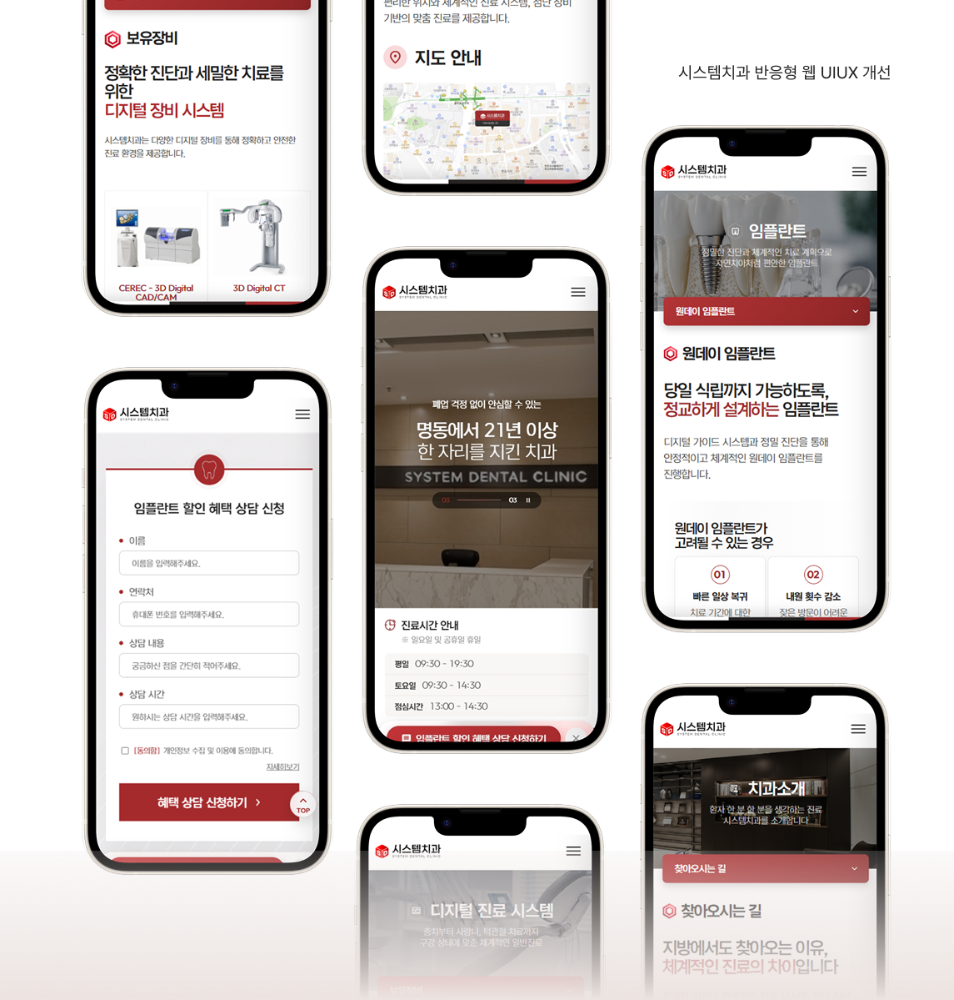

Project 02
시스템치과 반응형 웹 UI/UX 개선
Go to Website기존 병원 웹사이트의 정보 구조와 시각적 신뢰도를 개선하고, 사용자가 진료 정보와 예약 정보를 더 쉽게 찾을 수 있도록 정리한 팀 프로젝트입니다.
- Role
- 메인 디자인, 서브 페이지 개발, 디자인 서포트, 화면 구성 지원, 콘텐츠 정리, UX 검토
- Tools
- Figma, Photoshop, VS Code
- AI
- Claude, Codex, Midjourney
- Output
- Web, 반응형


신뢰보다 가격 혜택이 먼저 보이는 첫인상
기존 홈페이지는 첫 화면에 임플란트 할인과 전후 이미지를 크게 노출해, 병원의 전문성보다 가격 경쟁 중심의 인상을 전달하고 있었습니다.
또한 의료진, 진료 시스템, 치료 과정 등 신뢰를 형성할 수 있는 콘텐츠는 충분했지만, 정보가 효과적으로 분류되지 않아 사용자가 병원의 강점을 빠르게 파악하기 어려웠습니다.
- 자극적인 전후 사진 중심 구성으로 시각적 피로감과 거부감 유발
- 전문성 부족으로 이어지는 연속적인 할인 혜택 강조
이번 프로젝트에서는 단순한 화면 개선을 넘어, 병원의 전문성과 신뢰가 먼저 전달되도록 콘텐츠 구조와 시각적 우선순위를 재정비했습니다.

문제해결을 위한 3-POINT 핵심전략
신뢰감 있는 웹사이트를 만들기 위한 3가지 기준을 잡았습니다.
가독성
정보 위계를 정리해 사용자가 핵심 내용을 빠르게 이해할 수 있도록 개선
통일성
컬러, 컴포넌트, 레이아웃 규칙을 정리해 일관된 화면 경험 제공
전문성
의료진, 진료 시스템, 치료 과정을 중심으로 병원의 신뢰감 강화
시스템치과의 강점과 신뢰를 보다 효과적으로 전달하고 상담 전환을 유도하는 구조를 목표로 설계했습니다.
AS-IS
전후 사진, 할인 혜택, 캐릭터 이미지 중심의 구성으로 병원의 전문성과 신뢰감이 약하게 전달되고 있었습니다.


TO-BE
의료진, 진료 시스템, 병원 공간, 치료 과정 중심으로 재구성해 사용자가 병원의 전문성을 빠르게 이해할 수 있도록 개선했습니다.

UX 개선 포인트
-
1
브랜드 신뢰 형성 콘텐츠
의료진 수술 영상, 병원 인테리어, 전문 진료 이미지를 활용해 신뢰감 강화
-
2
진료 및 시스템 강점 소개
서울대 출신 의료진, 디지털 장비, 진료 프로세스를 중심으로 전문성 전달
-
3
환자 안심 콘텐츠 구성
치료 과정과 진료 시스템을 단계적으로 보여주어 사용자 불안감 완화
-
4
예약 전환 유도
고정 플로팅 메뉴와 예약 CTA를 배치해 상담·예약 접근성 강화
AI 활용 화면 구현을 통해 배운
디자인 기준의 중요성
프로젝트의 메인 페이지는 사용자 흐름과 콘텐츠 구조를 분석한 뒤 직접 디자인했습니다. 이후 메인 디자인의 컬러, 컴포넌트, 레이아웃 규칙을 기준으로 서브페이지 확장과 반응형 웹 구현에는 Claude Code를 활용했습니다.
단순히 결과물을 생성하는 방식이 아니라, 디자인 의도와 화면 구조의 기준을 정립해 구체적으로 전달하고 결과물을 반복적으로 확인·수정하며 실제 화면으로 완성했습니다.
Color System
Burgundy Red
#A12D2E
Soft Red
#D33B3B
Light Gray
#E9E6E2
Charcoal
#333333
Typography
A2Z font 기반 적용 (굵기별 위계 사용)
보기 좋은 화면보다
신뢰가 먼저 전달되는 구조
의료 웹사이트에서는 시각적 완성도보다 사용자가 어떤 정보를 먼저 보고 신뢰를 형성하는지가 중요했습니다.
의료진, 진료 시스템, 치료 과정의 우선순위를 재구성하고 정보 탐색이 상담과 예약으로 이어지도록 흐름을 개선했습니다.
기존의 가격 혜택과 시술 전후 이미지 중심 화면을 분석하고, 의료진·진료 시스템·치료 과정이 먼저 보이도록 콘텐츠 우선순위를 재구성했습니다.
또한 흩어진 정보를 목적에 맞게 정리하고 상담·예약으로 이어지는 흐름을 설계하며, 시각적 개선을 넘어 실제 사용자 경험을 개선하는 과정을 경험했습니다.
